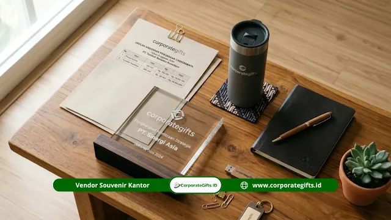

Corporate Gifts ID - Anggaran souvenir mitra PTN adalah alokasi biaya pengadaan cenderamata resmi kemitraan perguruan tinggi negeri yang disusun dalam Rencana Anggaran Biaya (RAB) dan berpedoman pada Perpres Nomor 16 Tahun 2018 beserta perubahannya. Nominalnya sangat bervariasi bergantung pada spesifikasi material produk, skala pemesanan unit, tingkat kustomisasi dual-logo, serta urgensi agenda seremonial.
Kami menyusun panduan komprehensif ini agar tim pengadaan dan unit keuangan institusi dapat merencanakan anggaran yang proporsional, mulai dari plakat MoU pimpinan hingga paket merchandise delegasi, dengan tetap menjunjung tinggi prinsip efisiensi, transparansi, dan akuntabilitas kelembagaan.
Poin Kunci Pengadaan Souvenir Mitra PTN:
- Kepatuhan Regulasi: Pengadaan mengacu pada Perpres 16/2018 (jo. Perpres 12/2021 dan Perpres 46/2025) serta kaidah tata kelola keuangan negara.
- Kewajiban RAB: Rencana Anggaran Biaya wajib memuat rincian spesifikasi teknis, harga satuan, dan kuantitas sebelum pengajuan persetujuan.
- Strategi Efisiensi: Penghematan biaya diraih melalui konsolidasi pemesanan massal tahunan dan standardisasi spesifikasi cinderamata.
- Audit & BAST: Bukti Berita Acara Serah Terima (BAST) dan dokumentasi penyerahan mutlak diperlukan untuk kepatuhan pemeriksaan auditor.
Apa yang Dimaksud dengan Anggaran Souvenir Mitra PTN?
Cenderamata kemitraan PTN merupakan tanda penghargaan formal yang diserahkan perguruan tinggi negeri kepada mitra strategis saat penandatanganan nota kesepahaman (MoU), kunjungan kerja diplomatik, maupun forum riset kolaboratif. Formatnya membentang dari plakat kayu kuningan eksklusif hingga seminar kit dan cinderamata fungsional.
Anggaran suvenir memuat rencana pembiayaan pengadaan secara utuh. Tim kerja sama yang menguasai tata regulasi dapat memaksimalkan nilai representasi martabat akademik universitas tanpa memicu pembengkakan pos anggaran operasional.
Bagaimana Regulasi Mengatur Anggaran Souvenir di Lingkungan PTN?
Pengadaan cinderamata di lingkungan institusi pendidikan tinggi negeri terikat pada kerangka hukum pengadaan barang/jasa instansi pemerintah, yakni Perpres Nomor 16 Tahun 2018 sebagaimana telah diubah dengan Perpres Nomor 12 Tahun 2021 dan pembaruan Perpres Nomor 46 Tahun 2025.
Posisi Souvenir dalam Klasifikasi Anggaran Kelembagaan
Dalam postur anggaran universitas, pos biaya cinderamata umumnya terdaftar pada mata anggaran protokoler, hubungan masyarakat, atau diplomasi kemitraan luar negeri. PTN Badan Layanan Umum (BLU) dan PTN Badan Hukum (PTN-BH) memiliki otonomi tata kelola pendapatan non-APBN, namun tetap terikat pada asas akuntabilitas publik.
Pentingnya RAB Terperinci Sebelum Pengadaan
Penyusunan RAB yang matang menjadi syarat mutlak pencairan dana pengadaan. Langkah praktis penyusunan RAB cinderamata institusi:
- Identifikasi Kebutuhan: Petakan jumlah delegasi penerima, level jabatan pimpinan, dan tema seremoni kerja sama.
- Penetapan Spesifikasi Teknis: Tentukan bahan baku (misal akrilik, kuningan, kayu mahoni), dimensi, dan jenis kemasan (hardbox beludru).
- Survei Harga Pasar: Kumpulkan komparasi penawaran resmi dari beberapa vendor terdaftar.
- Kalkulasi Komponen Lengkap: Masukkan ongkos ekspedisi, asuransi, serta komponen pajak pertambahan nilai (PPN).
- Pengajuan Verifikasi: Serahkan dokumen RAB kepada Pejabat Pembuat Komitmen (PPK) untuk penerbitan persetujuan.
Faktor yang Memengaruhi Besaran Anggaran Souvenir Mitra PTN
Terdapat lima variabel utama yang menentukan nilai akhir belanja cinderamata kelembagaan:

Penyusunan spesifikasi teknis dan komparasi penawaran vendor untuk pengadaan cinderamata resmi kampus negeri.
- Karakteristik Material: Plakat kuningan berbingkai kayu jati alami menuntut biaya lebih tinggi dibandingkan tumbler promosi berbahan plastik polimer.
- Volume Pesanan: Pembelian dalam kuantitas besar memungkinkan negosiasi potongan harga unit secara signifikan dibanding pemesanan eceran.
- Kompleksitas Kustomisasi: Grafir presisi, pewarnaan logo pantone ganda, serta plat logam etsa berkontribusi 20% hingga 40% dari total nilai per unit barang.
- Kemasan Eksklusif: Kotak hardbox berlapis beludru atau batik memberikan proteksi dan prestise ekstra namun memerlukan alokasi anggaran tersendiri.
- Tenggat Waktu Produksi: Pemesanan kilat (rush order) membebankan biaya lembur bengkel produksi yang seyogianya dihindari melalui perencanaan dini.
| Kategori Cinderamata PTN | Komponen Biaya Utama | Persentase Anggaran | Strategi Efisiensi |
|---|---|---|---|
| Plakat Seremonial MoU | Bahan kuningan/kayu, plat etsa, box beludru | 40% - 50% pos cinderamata | Standardisasi cetakan plakat rektorat untuk pemakaian berkala |
| Gift Set Eksekutif Pimpinan | Pen metal, agenda kulit dual-logo, tumbler vakum | 25% - 35% pos cinderamata | Pengadaan batch tahunan untuk seluruh fakultas |
| Merchandise Delegasi & Tamu | Tote bag kanvas, pouch, lanyard, flashdisk | 15% - 25% pos cinderamata | Pemesanan massal minimum 200 unit per semester |
Bagaimana Cara Efisiensi Pengadaan Souvenir Kelembagaan?
Efisiensi bukan berarti menurunkan mutu cinderamata ke tingkat yang murahan. Langkah cerdas mengoptimalkan dana publik meliputi:
- Konsolidasi Pengadaan Tahunan: Gabungkan kebutuhan seluruh fakultas dan lembaga universitas dalam satu kontrak payung guna mendapatkan harga grosir terendah.
- Standardisasi Desain Resmi: Mengunci model plakat baku menghindari biaya desain ulang berulang kali setiap ada agenda seremonial baru.
- Kemitraan Vendor Terpercaya: Bekerja sama dengan penyedia jasa yang berpengalaman menerbitkan faktur pajak lengkap dan siap memfasilitasi audit keuangan.
- Penerbitan BAST yang Tertib: Berita Acara Serah Terima yang lengkap menjamin kesesuaian spesifikasi barang fisik dengan nota pesanan sebelum pembayaran dilakukan.
Pertanyaan Seputar Anggaran Souvenir Mitra PTN (FAQ)
Kesimpulan Praktis
Pengelolaan anggaran souvenir mitra PTN yang sukses bersandar pada penguasaan regulasi pengadaan publik, ketelitian penyusunan RAB, serta pemilihan mitra produksi yang tepercaya. Dengan perencanaan sistematis, setiap alokasi dana tidak hanya menjaga kehormatan protokol universitas, namun juga terbukti akuntabel di mata hukum.
Diskusikan rancangan anggaran dan kebutuhan cinderamata kemitraan kampus Anda bersama Corporate Gifts ID. Kami siap menyediakan invoice B2B/B2G resmi, surat penawaran harga, dan sampel fisik berkualitas premium.
Disclaimer: Informasi dalam artikel ini bersifat edukasi umum berdasarkan kerangka regulasi pengadaan barang dan jasa publik di Indonesia. Selalu konsultasikan prosedur teknis dengan bagian biro keuangan dan pengadaan di kampus Anda.
Sumber Acuan: Perpres No. 16 Tahun 2018 (jo. Perpres No. 12 Tahun 2021 & Perpres No. 46 Tahun 2025) serta pedoman umum protokol kemitraan PTN Indonesia.